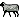

ئالدىنقى يازما
ئالدىنقى يازما كېيىنكى يازما
كېيىنكى يازما
جىنسي ھەۋەسنى قوزغاتقۇچى ساغلاملىق بويۇملىرى نامىدىكى دورىلارنى ئىشلىت
ئاپتور:Birzat ۋاقتى:2010-06-28


جىنسي ھەۋەسنى قوزغاتقۇچى ساغلاملىق بويۇملىرى نامىدىكى دورىلارنى ئىشلىتىش زىيانلىقمۇ؟
ياخشىمۇ سىز ~! ماڭا قولدا لەززەتلىنىشگە كۆنۆپ قالىغىلى يەتتە يىلىدىن ئاشقاندى،،يىقندا توي قىلدىم ...
ھەرقىتىم ئايالىم بىلەن جىنىسى مۇناسىۋەت قىلغاندا مىنۇتقا بارمىغان ۋاقىت ئىچىدە مەنى چىقىپ كىتىدۇ دە توختاپ قالىمەن ...لىكىن ئايالىمىنىڭ بىرەر قىتىممۇ ھسىياتى كەلگۇدەك مۇناسۋەت قىپ باقماپىتىمىز ...
زادى سورىماقچى بولىغىنىم مەنىنى كىيىنراق چىقدغانغا دورا بارمىدۇ....
يەنە بىر گەپ بازارلاردا ھەرخىل ساغلامىلىق بويۇملىرى ساتىدىكەن دوسلۇرۇمدىن ئاڭلىشىمچە شۇنى ئىشلەتسەم مەنى بۇرۇن چىقىپ كەتمەيمىش ...بىراق ئۇ دورىلارنى ئىشلەتسەم ماڭا زىيىنى بامۇ ..ئەۋلاد قالدۇرشقا زىيىنى بامۇ ...قولدا لەززەتلەنگەننىڭ بالا تىپشقا تەسىرى بامۇ ؟
جاۋاب:
ياخشىمۇ سىز
بلوگىمىزدىكى ئانانىزىم ھەققىدە يېزىلغان تېمىلارنى كۆرۈپ باققايسىز، سىز دېگەن ئەھۋاللارغا قارىتا چارە، داۋالاش ئۇسسۇللىرى تەپسىلى كۆرسىتىلگەن، شۇ خىل ئەھۋاللارغا قارىتا داۋالاش رولى بولغان، مىزاجغا ماس كىلىدىغان ئۇيغۇر تېبابەت دورىلىرىدىن ئىستىمال قىلىپ بەرسىڭىز بولىدۇ.
بازارلاردىكى ساغلاملىق بويۇملىرى نامىدىكى جىنسىي ھەۋەسنى قوزغايدىغان دورىلارغا قارىتا
غەرىپ تېبابىتى ﻣﯘﺗﻪﺧﻪﺳﺴﯩﺴﻠﻪﺭﻧﯩﯔ ﻛﯚﺭﺳﯩﺘﯩﺸﯩﭽﻪ ﺋﻪﺭﻟﻪﺭ ﺟﯩﻨﺴﯩﻲ ﮬﻪﯞﻩﺳﻨﻰ ﻗﻮﺯﻏﺎﻳﺪﯨﻐﺎﻥ ﺳﺎﻗﻠﯩﻖ ﺳﺎﻗﻼﺵ ﺑﻮﻳﯘﻣﻠﯩﺮﯨﻨﻰ ﺋﯘﺯﺍﻕ ﻣﯘﺩﺩﻩﺕ ﺋﯩﺴﺘﯩﻤﺎﻝ ﻗﯩﻠﺴﺎ ، ﻳﯜﺭﻩﻙ ﻗﺎﻥ-ﺗﻮﻣﯘﺭ ﻛﯧﺴﻪﻟﻠﯩﺮﯨﮕﻪ ﮔﯩﺮﯨﭙﺘﺎﺭ ﺑﻮﻟﯘﺵ ﻧﯧﺴﺒﯩﺘﻰ ﻳﯘﻗﯘﺭﻯ ﺑﻮﻟﯩﺪﯗ.
ﺋﯘﻳﻐﯘﺭ ﺗﯩﺒﺎﺑﻪﺕ ﺩﻭﺧﺘﯘﺭﻟﯩﺮﯨﻨﯩﯔ ﻗﺎﺭﯨﺸﯩﭽﻪ، ﺑﯘ ﺧﯩﻠﺪﯨﻜﻰ ﻣﻪﮬﺴﯘﻻﺗﻼﺭﻧﻰ ﻛﯚﭖ ﺋﯩﺴﺘﯩﻤﺎﻝ ﻗﯩﻠﻐﺎﻧﺪﺍ ﺷﻪﮬﯟﻩﺕ (ﺑﺎﮬ) ﻧﻰ ﺋﺎﺟﯩﺰﻻﺷﺘﯘﺭﯨﺪﯗ. ﻣﻪﺯﻯ ﺑﯧﺰﻯ، ﺋﯘﺭﯗﻗﺪﺍﻥ، ﺑﯚﺭﻩﻙ ﺧﯩﺰﻣﯩﺘﻰ ﺋﺎﺳﺎﻧﻼ ﺗﻮﺳﺎﻟﻐﯘﻏﺎ ﺋﯘﭼﺮﺍﻳﺪﯗ. ﺋﯘﻧﺪﯨﻦ ﺑﺎﺷﻘﺎ ﻧﯧﺮﯞﺍ، ﻳﯜﺭﻩﻛﻨﯩﯔ ﺑﯧﺴﯩﻤﯩﻨﻰ ﺯﻭﺭ ﺩﻩﺭﯨﺠﯩﺪﻩ ﺋﺎﺷﯘﺭﯞﯦﺘﯩﺪﯗ.
____________ بىرزات
ياخشىمۇ سىز ~! ماڭا قولدا لەززەتلىنىشگە كۆنۆپ قالىغىلى يەتتە يىلىدىن ئاشقاندى،،يىقندا توي قىلدىم ...
ھەرقىتىم ئايالىم بىلەن جىنىسى مۇناسىۋەت قىلغاندا مىنۇتقا بارمىغان ۋاقىت ئىچىدە مەنى چىقىپ كىتىدۇ دە توختاپ قالىمەن ...لىكىن ئايالىمىنىڭ بىرەر قىتىممۇ ھسىياتى كەلگۇدەك مۇناسۋەت قىپ باقماپىتىمىز ...
زادى سورىماقچى بولىغىنىم مەنىنى كىيىنراق چىقدغانغا دورا بارمىدۇ....
يەنە بىر گەپ بازارلاردا ھەرخىل ساغلامىلىق بويۇملىرى ساتىدىكەن دوسلۇرۇمدىن ئاڭلىشىمچە شۇنى ئىشلەتسەم مەنى بۇرۇن چىقىپ كەتمەيمىش ...بىراق ئۇ دورىلارنى ئىشلەتسەم ماڭا زىيىنى بامۇ ..ئەۋلاد قالدۇرشقا زىيىنى بامۇ ...قولدا لەززەتلەنگەننىڭ بالا تىپشقا تەسىرى بامۇ ؟
جاۋاب:
ياخشىمۇ سىز
بلوگىمىزدىكى ئانانىزىم ھەققىدە يېزىلغان تېمىلارنى كۆرۈپ باققايسىز، سىز دېگەن ئەھۋاللارغا قارىتا چارە، داۋالاش ئۇسسۇللىرى تەپسىلى كۆرسىتىلگەن، شۇ خىل ئەھۋاللارغا قارىتا داۋالاش رولى بولغان، مىزاجغا ماس كىلىدىغان ئۇيغۇر تېبابەت دورىلىرىدىن ئىستىمال قىلىپ بەرسىڭىز بولىدۇ.
بازارلاردىكى ساغلاملىق بويۇملىرى نامىدىكى جىنسىي ھەۋەسنى قوزغايدىغان دورىلارغا قارىتا
غەرىپ تېبابىتى ﻣﯘﺗﻪﺧﻪﺳﺴﯩﺴﻠﻪﺭﻧﯩﯔ ﻛﯚﺭﺳﯩﺘﯩﺸﯩﭽﻪ ﺋﻪﺭﻟﻪﺭ ﺟﯩﻨﺴﯩﻲ ﮬﻪﯞﻩﺳﻨﻰ ﻗﻮﺯﻏﺎﻳﺪﯨﻐﺎﻥ ﺳﺎﻗﻠﯩﻖ ﺳﺎﻗﻼﺵ ﺑﻮﻳﯘﻣﻠﯩﺮﯨﻨﻰ ﺋﯘﺯﺍﻕ ﻣﯘﺩﺩﻩﺕ ﺋﯩﺴﺘﯩﻤﺎﻝ ﻗﯩﻠﺴﺎ ، ﻳﯜﺭﻩﻙ ﻗﺎﻥ-ﺗﻮﻣﯘﺭ ﻛﯧﺴﻪﻟﻠﯩﺮﯨﮕﻪ ﮔﯩﺮﯨﭙﺘﺎﺭ ﺑﻮﻟﯘﺵ ﻧﯧﺴﺒﯩﺘﻰ ﻳﯘﻗﯘﺭﻯ ﺑﻮﻟﯩﺪﯗ.
ﺋﯘﻳﻐﯘﺭ ﺗﯩﺒﺎﺑﻪﺕ ﺩﻭﺧﺘﯘﺭﻟﯩﺮﯨﻨﯩﯔ ﻗﺎﺭﯨﺸﯩﭽﻪ، ﺑﯘ ﺧﯩﻠﺪﯨﻜﻰ ﻣﻪﮬﺴﯘﻻﺗﻼﺭﻧﻰ ﻛﯚﭖ ﺋﯩﺴﺘﯩﻤﺎﻝ ﻗﯩﻠﻐﺎﻧﺪﺍ ﺷﻪﮬﯟﻩﺕ (ﺑﺎﮬ) ﻧﻰ ﺋﺎﺟﯩﺰﻻﺷﺘﯘﺭﯨﺪﯗ. ﻣﻪﺯﻯ ﺑﯧﺰﻯ، ﺋﯘﺭﯗﻗﺪﺍﻥ، ﺑﯚﺭﻩﻙ ﺧﯩﺰﻣﯩﺘﻰ ﺋﺎﺳﺎﻧﻼ ﺗﻮﺳﺎﻟﻐﯘﻏﺎ ﺋﯘﭼﺮﺍﻳﺪﯗ. ﺋﯘﻧﺪﯨﻦ ﺑﺎﺷﻘﺎ ﻧﯧﺮﯞﺍ، ﻳﯜﺭﻩﻛﻨﯩﯔ ﺑﯧﺴﯩﻤﯩﻨﻰ ﺯﻭﺭ ﺩﻩﺭﯨﺠﯩﺪﻩ ﺋﺎﺷﯘﺭﯞﯦﺘﯩﺪﯗ.
____________ بىرزات

 يازما مەنبەسى: بېكەت ئەسىرى
يازما مەنبەسى: بېكەت ئەسىرى خەتكۈش: جىنسىي، ساغلاملىق،
خەتكۈش: جىنسىي، ساغلاملىق،  مۇناسىۋەتلىك يازمىلار:
مۇناسىۋەتلىك يازمىلار:
ئىنكاس: 16 | نەقىل: 0 | كۆرۈلگىنى: -
 قايتۇرما
قايتۇرما ]
]مېنېڭ بەدېنېمگە ئوزلېكېدېن تۇك ئۇنۇپ كالدې .بۇ نېمە ېش؟ بۇ ئانانېزېم نېڭ تەسرېمېدۇ؟
ئەسسالامۇ ئەلەيكۇم .قەلەمپۇر مىيى بىلەن جىنسي ئەزانى ياغلاپ بەرسەم بولامدۇ .پايدىسى بولامدۇ ؟ ئەكىس تەسىرى بولامدۇ ياكمۇ ؟ئىسپىرما بالدۇر كىتىشكە شىپا قىلامدۇ ؟
مالال كۆرمەي بىر جاۋاپ بەرگەن بولسىلا ؟
مالال كۆرمەي بىر جاۋاپ بەرگەن بولسىلا ؟
نىمىشقا بۇ يەردىكى نۇرغۇنلىغان نازۇك سوئاللار جاۋاپسىز قالىدۇ ؟
ياخشىمۇسىز؛ ئەگەردە زەكەر يەنى جىنسى ئەزا كىچىك بولۇپ نورمال بولمىسا قانداق قىلىش كېرەك
ياخشىمۇسىز؛ ئەگەردە زەكەر يەنى جىنسى ئەزا كىچىك بولۇپ نورمال بولمىسا قانداق قىلىش كېرەك
ياخشىمۇسىز؛ ئەگەردە زەكەر يەنى جىنسى ئەزا كىچىك بولۇپ نورمال بولمىسا قانداق قىلىش كېرەك.
بۇسۇئالىمغا جاۋاپ بەرسەڭلار؟
بۇسۇئالىمغا جاۋاپ بەرسەڭلار؟
بىرزات ئەپەندىم ياخشىمۇ سىز ؟ مەن سىز دىن سەت بولسىمۇ مەسلىھەت سورسام .. مىنىڭ جىنسى ئەزايىم بەك ئۇزۇن ھىسياتلانغاندىكى ئۇزۇنلىغى 30سانتىمىتىردىن ئاشىدۇ شۇ سەۋەبلىك ئايالىم پات-پات دوختۇر خانىغا كىرىپ قالىدۇ . ئەمدىلىكتە ئۇ ئاجراشماقچى بولۋاتىدۇ مەن شۇنداق دىققەت قىلساممۇ بىراق بىللە بولغاندا تەسادىبىلىقتىن خالى بولغىلى بولمايدىكەن شۇڭا ماڭا بىر مەسلىھەت بەرگەن بولسىڭىز مەن قانداق قىلىشىمنى بىلەلمىدىم .........
ئەسسالامۇ ئەلەيكۇم؛ بىرزات ئەپەندڭم ئۇلۇغ ئاللاھ تىنىڭىزنى سالامەت كىلسۇن .مەخسەتكە كەلسەم تۇغۇتۇمدىن كىيىن ئالدىمدىن يەل چىقىدىغان بوپ كالدى قانداق قىلسام بۇ كىسەلدىن قۇتۇلامەن خوش بوپ كىتەي بىر جاۋاپ بەرگەن بولسىلا سىلدىن كۈپ مىننەتدار بۇلار ئىدىم . دوختۇرخانىغا بارغىلى خىجىل بولدۇم .. سىلىدە دورىسى بارمۇ ،مەن خوتەندىن ،خۇتەندىمۇ سېـىتىش ئورنىلىرى بارمۇ .بولسا دەپ پەرگەن بولسىلا. خەتنى بەك سەت يازدىم تۇزۇتۇپ ئۇقۇغايلا قاندا ئەزا بۇلۇشنى ئۇقالماي ئىنكاس يوللاشتىن يوللىدىم ئەيىپكە بۇيرىمىغايلا .
ئاياللار ھامىلدارلىق مەزگىلىدە پۇت ۋە قول بارماقلىرى قىچىشىش، پۇت مۇسكۇللىرى چىمىلداپ قىچىشىش قاتارلىق ئامىللار تۇغۇتقا ئەگىشىپ كىلىدىغان كېسەللىك ئىكەن، بۇنى 肝内胆汁淤积症 دەپ ئاتايدىكەن. بۇ كېسەلنىڭ ھامىلىگە ئېغىر تەسىرى بۇلۇپ، ھامىلىگە ئوكسىگىن يىتىشمەسلىك، ھامىلە تەرەققى قىلالماسلىق، ھامىلە ئۆلۈك تۇغۇلۇش، تۇغۇتتا قان توختىماسلىق قاتارلىق خەتەرلەرنى ئېلىپ كىلىدىكەن، بۇ كېسەلنىڭ قان تەكشۈرۈشتىلى ئالامىتى جۈئەنمېي يۇقۇرىلاپ كىتىش (ئادەتتە قاندىكى جۈئەنمېي ئۆلچىمى 40تىن تۆۋەن بۇلۇپ، بۇ كېسەل كۆرۈلگەندە 5ھەسسىدىن 20ھەسسىگىچە يۇقۇرىلاپ ھەتتا 500دىن ئېشىپ كىتىدىكەن) . لىكىن بۇ كېسەل بالا تۇغۇلغاندىن كىيىن ياكى بالا چۈشۈپ كەتكەندىن كىيىن ئۆزلىكىدىن ساقىيىپ قالىدىكەن. بۇ كېسەلنى ئاياللار ھامىلدارلىق مەزگىلىدە مىللى تىبابەتتە داۋالاش ئۇسۇلى بارمۇ؟
ئاياللار ھامىلدارلىق مەزگىلىدە پۇت ۋە قول بارماقلىرى قىچىشىش، پۇت مۇسكۇللىرى چىمىلداپ قىچىشىش قاتارلىق ئامىللار تۇغۇتقا ئەگىشىپ كىلىدىغان كېسەللىك ئىكەن، بۇنى 肝内胆汁淤积症 دەپ ئاتايدىكەن. بۇ كېسەلنىڭ ھامىلىگە ئېغىر تەسىرى بۇلۇپ، ھامىلىگە ئوكسىگىن يىتىشمەسلىك، ھامىلە تەرەققى قىلالماسلىق، ھامىلە ئۆلۈك تۇغۇلۇش، تۇغۇتتا قان توختىماسلىق قاتارلىق خەتەرلەرنى ئېلىپ كىلىدىكەن، بۇ كېسەلنىڭ قان تەكشۈرۈشتىلى ئالامىتى جۈئەنمېي يۇقۇرىلاپ كىتىش (ئادەتتە قاندىكى جۈئەنمېي ئۆلچىمى 40تىن تۆۋەن بۇلۇپ، بۇ كېسەل كۆرۈلگەندە 5ھەسسىدىن 20ھەسسىگىچە يۇقۇرىلاپ ھەتتا 500دىن ئېشىپ كىتىدىكەن) . لىكىن بۇ كېسەل بالا تۇغۇلغاندىن كىيىن ياكى بالا چۈشۈپ كەتكەندىن كىيىن ئۆزلىكىدىن ساقىيىپ قالىدىكەن.
بۇ كېسەلنى ئاياللار ھامىلدارلىق مەزگىلىدە مىللى تىبابەتتە داۋالاش ئۇسۇلى بارمۇ؟
بۇ كېسەلنى ئاياللار ھامىلدارلىق مەزگىلىدە مىللى تىبابەتتە داۋالاش ئۇسۇلى بارمۇ؟
ئەسالامۇ ئەلەيكۇم ھۈرمەتلىك بىرات ئاپەندى ياخشىمۇ سىز ....
سىزدىن شۇنداق بىر مەسلىنى سورغۇم كىلۈاتىدۇ . مەن بۇ يىل ئەمدى 20 ياشقا كىدىم ، يېشىم تېخ كىچىك يەنلا خاتىرجەم بۇلالماي سىزگە ېيتىشننى توغرا تاپتىم ! مەن مەكتەپتە ئۇقۇيدىغان ۋاىتىمدا مۇئەللىم مەنى <<ئاق سۇت >> رەڭدە بۇلدۇ دڭەن لىكىن مەن ئۈزەمنىڭكىنى سىناق قىلپاقان ئدىم ئوخشاش ئەمەسكەن <<سۇس سېرىقراق>> كەن شۇڭا سىزدىن سۇرايدغنىم ئەمدى كىين توي قىلسام پەرزەنتلىك بۇلشۇمغا ئىككى ئوخشىماسلىق تەسىر بۇلامدۇ يوق بىلپباقۇم كەپ كالدى . سىزنى ئاۋارە قىلدىغان بولدۇم ، رەخمەت سىزەگە
سىزدىن شۇنداق بىر مەسلىنى سورغۇم كىلۈاتىدۇ . مەن بۇ يىل ئەمدى 20 ياشقا كىدىم ، يېشىم تېخ كىچىك يەنلا خاتىرجەم بۇلالماي سىزگە ېيتىشننى توغرا تاپتىم ! مەن مەكتەپتە ئۇقۇيدىغان ۋاىتىمدا مۇئەللىم مەنى <<ئاق سۇت >> رەڭدە بۇلدۇ دڭەن لىكىن مەن ئۈزەمنىڭكىنى سىناق قىلپاقان ئدىم ئوخشاش ئەمەسكەن <<سۇس سېرىقراق>> كەن شۇڭا سىزدىن سۇرايدغنىم ئەمدى كىين توي قىلسام پەرزەنتلىك بۇلشۇمغا ئىككى ئوخشىماسلىق تەسىر بۇلامدۇ يوق بىلپباقۇم كەپ كالدى . سىزنى ئاۋارە قىلدىغان بولدۇم ، رەخمەت سىزەگە
ياخشىمۇ سىز دوختۇر مەندە سىيىپ سۇيدۇك ئاخىرلاشقاندا سۇيدۇك تۇگممىەەندەك سىزىم بۇلدىغان جىنسىيەتكە ئائىت سوزھەركەتلەر بۇلۇنغاندا مەنى يۇرۇپ كەتكەندەك سىزىم بۇلدىغان تۇرۇپ-تۇرۇپ بىلىم ئاغرىيدىغان ئەھۋاللار بار بۇ يىل 22ياش توي قىلمىغان ، زەكىرىم بەك قاتمايدۇ،قاتقان ۋاقىتتا ئوتتىرسى ئىگىز ئۇچى تۇۋەنەنگە قاراپ قالدۇ، ئۇزۇنلىقى نۇرمال،بۇرۇن سۇيدۇك ئېچىشتۇرۇپ كىلەتتى،تۇمۇر تۇتقۇزۇپ مەزى بىزى يالغۇلىنىپ قاپتۇ دەپ قايناقسۇنى كوپ ئىچىپ بىرشىمنى ھەمدە كۇندە بىر تال شۇخلا يەپ بىرشىمنى ېيتقان ھازىرئاغرىتىپ كەلمەيدۇ لىكىن سىيىپ بولساممۇ سۇدۇك باردەك ھىس قىلمەن سۇيدۇك تامچىلاپ كىلدۇمەسلەھەت بەرگەن بولسىڭىز.
ئەسسالامۇ-ئەلەيكۇم...........
بىرزات ئەپەندىم،مىنىڭ سىلىدىن سورايدىغان بىر سوئالىم بار ئىدى.ئىغىر كۆرمەي ماڭا بىر مەسلىھەت بەرگەن بولسىلا؟
مەن بۇيىل 20ياشقا كىردىم.توي قىلغىلى 2يىل بولدى.بىر بالاممۇ بار.نىمىشكىقىن بالامنى تۇغقاندىن كىيىن جىنسى تۇرمۇشۇم بۇرۇنقىدەك ....بولمايدىغان بولۇپ قالدى.گەرچە يولدىشىم ماڭا يەنىلا بۇرۇنقىدەك مۇئامىلدە بولسىمۇ ،لىكىن مەن ئۆزۈم باشقىچە بولۇپ قالدىم.چۈنكى تۇغۇتتىن كىيىن جىنسى يولدا ھامان ئۈزگىرىش بولدۇ ئەمەسمۇ؟؟مەن ۋە يولدىشىم ھەر ئىككىمىز دوختۇر،گەرچە يولدىشىم بۇنى تامامەن توغرا چۈشەنسىمۇ، لىكىن مەن ئۆزۈم قورۇنۇپ قالدىم.تارايتىش ئوپراتسىيسى قىلدۇرۇشنىمۇ ئويلاشتىم ،لىكىن مەن ئۆزۈممۇ دوختۇر بۇنداق قىلشنىڭ زىينىنى ئوبدان بىلمەن،شۇڭا سىلىنى مىنىڭ مۇشۇ ئىشىمغا بىر مەسلەھەت كۆرسىتىپ بېرەمدىكىن دېگەن ئۈمۈتتمەن. سىلىنىڭ جاۋاپلىرنى كۈتىمەن.
......ئۆزگىچە.....دىن
بىرزات ئەپەندىم،مىنىڭ سىلىدىن سورايدىغان بىر سوئالىم بار ئىدى.ئىغىر كۆرمەي ماڭا بىر مەسلىھەت بەرگەن بولسىلا؟
مەن بۇيىل 20ياشقا كىردىم.توي قىلغىلى 2يىل بولدى.بىر بالاممۇ بار.نىمىشكىقىن بالامنى تۇغقاندىن كىيىن جىنسى تۇرمۇشۇم بۇرۇنقىدەك ....بولمايدىغان بولۇپ قالدى.گەرچە يولدىشىم ماڭا يەنىلا بۇرۇنقىدەك مۇئامىلدە بولسىمۇ ،لىكىن مەن ئۆزۈم باشقىچە بولۇپ قالدىم.چۈنكى تۇغۇتتىن كىيىن جىنسى يولدا ھامان ئۈزگىرىش بولدۇ ئەمەسمۇ؟؟مەن ۋە يولدىشىم ھەر ئىككىمىز دوختۇر،گەرچە يولدىشىم بۇنى تامامەن توغرا چۈشەنسىمۇ، لىكىن مەن ئۆزۈم قورۇنۇپ قالدىم.تارايتىش ئوپراتسىيسى قىلدۇرۇشنىمۇ ئويلاشتىم ،لىكىن مەن ئۆزۈممۇ دوختۇر بۇنداق قىلشنىڭ زىينىنى ئوبدان بىلمەن،شۇڭا سىلىنى مىنىڭ مۇشۇ ئىشىمغا بىر مەسلەھەت كۆرسىتىپ بېرەمدىكىن دېگەن ئۈمۈتتمەن. سىلىنىڭ جاۋاپلىرنى كۈتىمەن.
......ئۆزگىچە.....دىن
بىرزات ھەكىمنىڭ ماڭغان قەدەملىرىدىن تېخىمۇ خۇشپۇراق گۈللەر ئۈنگەي! تېنىگە ساقلىق، ھاياتىغا بەركەت، كەسپىگە مۇۋاپىقيەت، تىجارىتىگە روناق تىلەيمەن!! ساغلاملىقىمىز ئۈچۈن تېخىمۇ كۆپ تىرىشچانلىقلارنى كۆرسىتىشىڭىزنى ئۈمۈد قىلىمەن.
_____ سىزنى ئۇستازى قاتارىدا كۆرۈپ ئىھتىرام بىلدۈرگۈچى تورداشتىن!
_____ سىزنى ئۇستازى قاتارىدا كۆرۈپ ئىھتىرام بىلدۈرگۈچى تورداشتىن!
ياخشىمۇسىز؛ ئەگەردە زەكەر يەنى جىنسى ئەزا كىچىك بولۇپ نورمال بولمىسا قانداق قىلىش كېرەك.
بۇسۇئالىمغا جاۋاپ بەرسەڭلار؟
بۇسۇئالىمغا جاۋاپ بەرسەڭلار؟
 
بىرزات ھەكىمنىڭ ماڭغان قەدەملىرىدىن تېخىمۇ خۇشپۇراق گۈللەر ئۈنگەي! تېنىگە ساقلىق، ھاياتىغا بەركەت، كەسپىگە مۇۋاپىقيەت، تىجارىتىگە روناق تىلەيمەن!! ساغلاملىقىمىز ئۈچۈن تېخىمۇ كۆپ تىرىشچانلىقلارنى كۆرسىتىشىڭىزنى ئۈمۈد قىلىمەن.
_____ سىزنى ئۇستازى قاتارىدا كۆرۈپ ئىھتىرام بىلدۈرگۈچى تورداشتىن
_____ سىزنى ئۇستازى قاتارىدا كۆرۈپ ئىھتىرام بىلدۈرگۈچى تورداشتىن
ياش ياش باللا، ئاشۇنداق دورا ساتىدىغان يەردە چۆگىلەپ يۈرۈيدىكەن دېسە... مانا مۇشۇنداق زىيانلىرىنى بىلسە ئىدى، بىرزات ھەكىم ئېيتقانداق كۆپ بەدەن چىنىقتۇرۇپ، ئۆزىمىزنىڭ ئىسىل قۇۋۋەتلىك تەبئىي يىمەكلىكلىرىمىزدىن ئىستىمال قىلىپ، زىيادە سوغۇقلۇق، ئىسپىرتلىق ئىچىملىك، زەھەرلىك چېكىملىك ۋە شۇنداق بويۇملاردىن ئۆزىنى يىراق قىلسا ، ئانانىزىمغا ئوخشاش ئۆزىنى خورلاشتەك چۈشكۈنلۈكتىن قۇتۇلۇپ كۆتۈرەڭگۈ ياشىسا ئۇنداق دورىلارنىمۇ ئىزدەپ يۈرمىگەن بولاتتى. زادى قانداق ياشاشنى، ئۆزىنى قانداق ئاسىراشنى بىلمىگەن ئادەمنىڭ ئىشى چاتاق ئىكەن. بىر ناننى تېخى ئىككى قىلالمىغان، ئائىلە بالا-چاقىلىرىنى تېخى خوش قىلالمىغان، ھە دېگەندە سەپرالىشىپ ئۇرۇشقاق بولاپ كەتكەن. ئەرلەردىكى ئۇ خىل زەئىپلىكلەر يالغۇز ئۆزى بىلەنلا تۈگىمەيدىكەن. تارتقۇلۇق ئايالىغىمۇ بولىدىكەن. ئۇمۇ نۇرمال فىزئولوگىيلىك ئىھتىياجلاردىن بەھرىمان بولىشى كېرەك دە!!.
ئۆزىڭىزنى ئوبدان ئاسىرىماي، ئىچىپ-چىكىپ ئويناپ يۈرسىڭىز، ئانانىزىمدەك بولمىغۇرلۇقلار بىلەن ئەرلىك ھاياتى كۈچىڭىزنى بىر پۇل قىلىپ سۆلىڭىز قالمىغاندا بىر ئۆمۈر خىزمىتىڭىزنى قىلىدىغان، سىزگە بارلىقىنى، مۇھەببىتىنى بېغىشلايدىغان ئايالىڭىزغا ئېغىرىڭىزنى سىلىپ گاھى ئىچىڭىزگە تىنىپ زەئىپانا بۇرۇقتۇرما بولۇپ يۈرسىڭىز، گاھى سەپرالىشىپ ئۇرۇشۇپ يۈرسىڭىز - قېنى سىزدىكى ئەرلىك كامالەت، ئۇرغۇپ تۇرغان قۇۋۋەت، ئوتلۇق مۇھەببەتلەر؟ قېنى سىزنىڭ ئايالىڭىز ئالدىدىكى مەسئۇلىيەت، ئۇماق پەرزەنتلىرىڭىز ئالدىدىكى سۈلكىتىڭىز؟!!!
ئاياللىرىڭلارنى ئۇنداق تاشلاپ قويماڭلار، بىچارە مەزلۇمە سۈيى يوق كۆلدەك قاغجىراپ يېرىلىپ ئۆتۈپ كەتمىسۇن، ئۇنىڭمۇ ياشلىق گۈللىرى تولۇق پورەكلىسۇن، كۈچتۈڭگۈر، پالۋان كەبى ئەرلىرىدىن زوقلىنىپ، پەخىرلىنىپ ياشىسۇن!!! باغرى قانسۇن!!
ئۆزىڭىزنى ئوبدان ئاسىرىماي، ئىچىپ-چىكىپ ئويناپ يۈرسىڭىز، ئانانىزىمدەك بولمىغۇرلۇقلار بىلەن ئەرلىك ھاياتى كۈچىڭىزنى بىر پۇل قىلىپ سۆلىڭىز قالمىغاندا بىر ئۆمۈر خىزمىتىڭىزنى قىلىدىغان، سىزگە بارلىقىنى، مۇھەببىتىنى بېغىشلايدىغان ئايالىڭىزغا ئېغىرىڭىزنى سىلىپ گاھى ئىچىڭىزگە تىنىپ زەئىپانا بۇرۇقتۇرما بولۇپ يۈرسىڭىز، گاھى سەپرالىشىپ ئۇرۇشۇپ يۈرسىڭىز - قېنى سىزدىكى ئەرلىك كامالەت، ئۇرغۇپ تۇرغان قۇۋۋەت، ئوتلۇق مۇھەببەتلەر؟ قېنى سىزنىڭ ئايالىڭىز ئالدىدىكى مەسئۇلىيەت، ئۇماق پەرزەنتلىرىڭىز ئالدىدىكى سۈلكىتىڭىز؟!!!
ئاياللىرىڭلارنى ئۇنداق تاشلاپ قويماڭلار، بىچارە مەزلۇمە سۈيى يوق كۆلدەك قاغجىراپ يېرىلىپ ئۆتۈپ كەتمىسۇن، ئۇنىڭمۇ ياشلىق گۈللىرى تولۇق پورەكلىسۇن، كۈچتۈڭگۈر، پالۋان كەبى ئەرلىرىدىن زوقلىنىپ، پەخىرلىنىپ ياشىسۇن!!! باغرى قانسۇن!!
ئىنكاس يوللاش